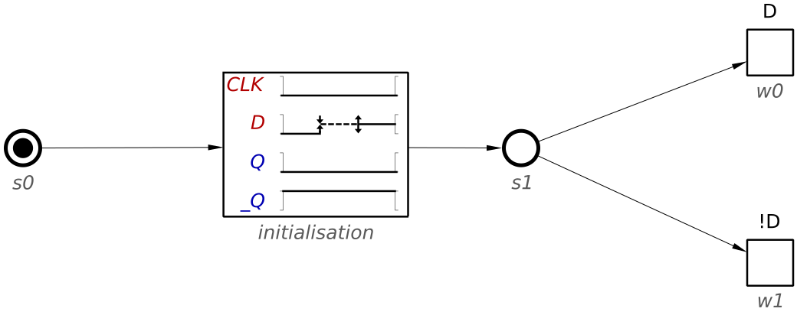
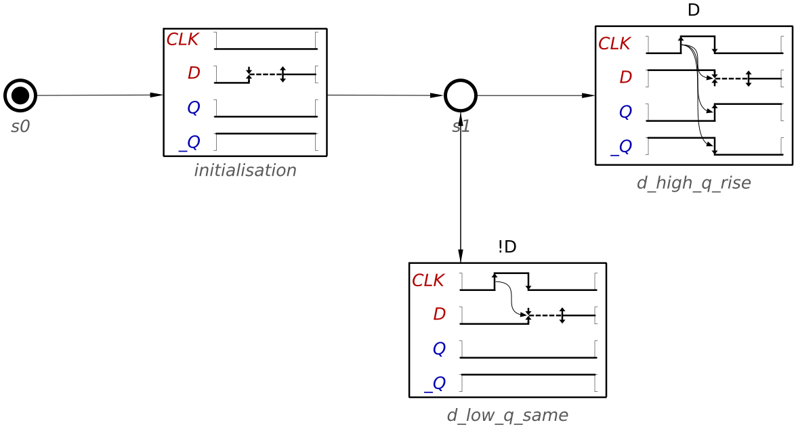
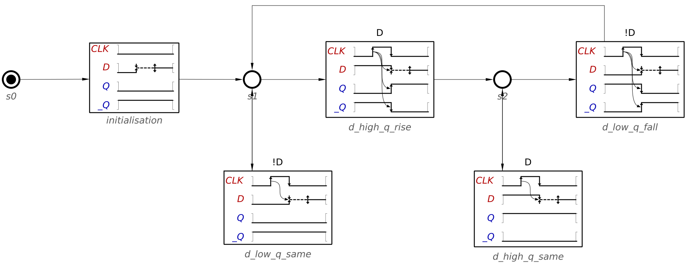

Modelling D flip-flop with WTG guards
D Flip-flop is a very popular circuit with digital electronics that implements a basic memory element. This tutorial will introduce the use of guards in WTGs by using a flip-flop as an example. Check Design of Waveform Transition Graph for basic buck controller before attempting to complete this tutorial.
A D flip-flop is composed of four signals, two inputs and two outputs. It captures the value of its data input signal D at a specific change of its clock input signal CLK. For example, at every rising transition of CLK. The captured value becomes the output signal Q until a different value is captured. The remaining output signal Q' corresponds to the complementary of signal Q.
In this example, the value for signal D is irrelevant most of the time and must be ignored until the rising edge of CLK. This makes it a natural fit for design with WTG.
Modelling
Often the first step in WTG design is defining the initialization of the circuit. In this case, we will assume that all the inputs start at low, with the outputs Q and _Q at low and high respectively. The only initialization needed for the flip-flop is for signal D. It starts at low, but afterwards it might arbitrarily change value. Our circuit should ignore any changes that D performs before a rising edge. This can be specified by an unstable transition. Note that, since D needs to become stable before the next transition of CLK, the unstable transition must be followed by a stable transition.
The following figure shows a possible implementation of this initialisation.

In the previous figure we show all four signals, even though the waveform only has transitions for D. The WTG model would be correct if we didn't use signals in waveforms that do not have transitions for them1). Yet, it is sometimes helpful to keep them for improved readability. Decide if you want to show unused signals or not according to your needs.
Regardless of your choice, we have now initialised the flip-flop and D should be set at stable state. This means that D might have had an arbitrary number of transitions (including none), but now is guaranteed to remain stable at some unknown value. WTGs allows us to specify how the model should behave depending on the value of a stable signal by using guards.
Add two new waveforms and specify a guard for D in them: one for low and one for high.

You can now edit every waveform and model their behavior assuming the value of D. Let us start with the waveform that guards for low. The first transition has to be for CLK. Since it is a raise transition, the value of D is captured and propagated to the outputs. Note that, since these outputs were already capturing a value of low, their value remains the same.
But the transition for CLK has an additional effect: the transitions for D must again be ignored. This signal should now destabilise and stabilise before the end of the waveform. Add a fall transition for CLK in order to make this waveform a self-contained scenario. Rename this waveform into d_low_q_same.
Finally, since the state of all signals matches that of the initialisation, add a connection between the waveform and the previous state. If D has stabilised to low again, this will prompt this waveform to repeat. If the value has changed to high, then the other scenario will play out.
The following figure shows a possible implementation of this model. Note that, as with the initialisation, the signals Q and _Q could be omitted from this waveform.

Let us now model the waveform for when D is stabilised at high. We will call this scenario d_high_q_rise. This case is similar to the previous scenario, but this time the transition for CLK will also trigger transitions for Q and _Q.
The WTG should look similar to the following figure.

At this point it might be tempting to add a connection between the last waveform and the previous state. Yet this is not possible, since the states for signals Q and _Q do not match the initial states. We have to add two new waveforms with guards for signal D.
Add two new waveforms, including the state and the guards and connections. Rename the waveforms into d_high_q_same and d_low_q_fall. Start by designing the scenario from d_high_q_same. Note that, since this scenario returns the signals to their previous states you can add a connection back from the waveform to the state.
Check that your WTG looks like this.

Finally, you can complete the last scenario, d_low_q_fall. The state for all the signals at the end of this waveform matches the state after the initialisation, so you can close the loop with a connection between the waveform and the state succeeding the initialisation waveform.
You can see the final model in the next figure.
